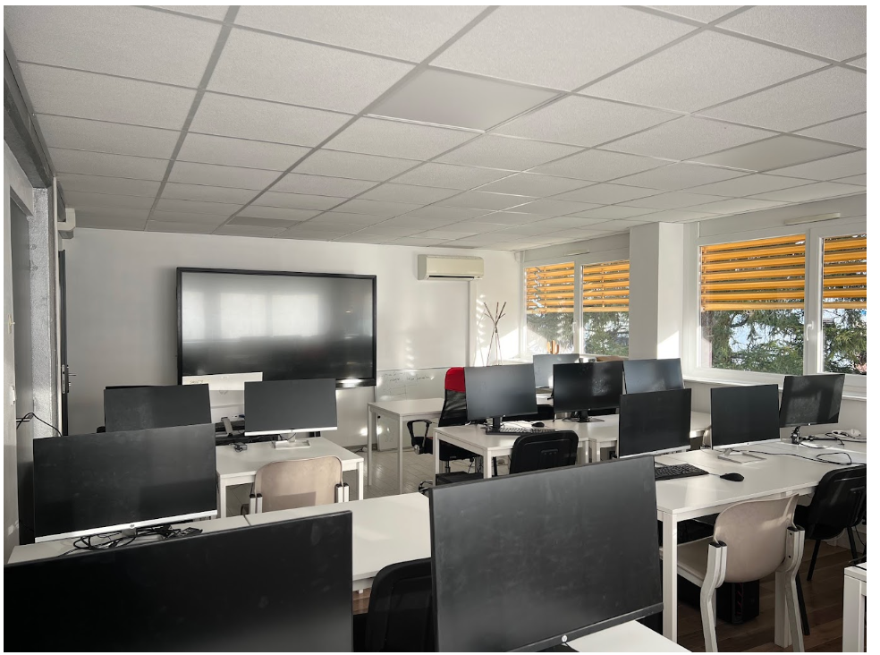
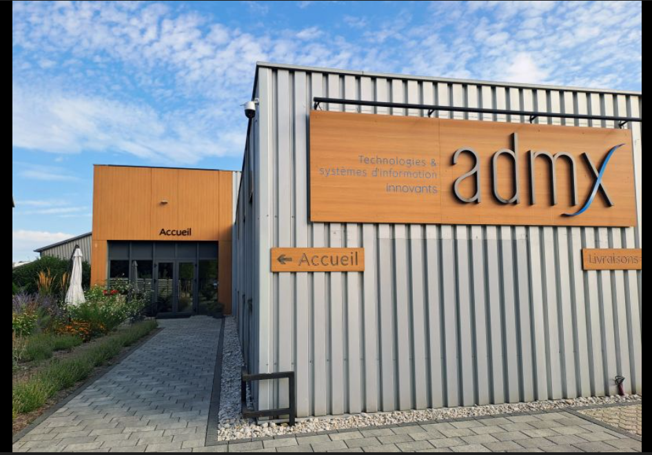

Martinez_Tao // Rapport_de_Stage
MARTINEZ
TAO
Lycée Jules Haag — Site Marceau
// 01_INTRODUCTION_GENERALE
"L'informatique n'est pas qu'une question de machines, c'est une question de solutions."
Ce rapport consigne deux années d'immersion professionnelle. Entre 2024 et 2026, j'ai eu l'opportunité d'intégrer deux structures aux besoins distincts, me permettant de valider les compétences hardware et software du Bac Pro CIEL.
// 02_ORGANISATION_FORMAGRAPH
Secteur: FormationFormagraph.

Située au cœur de Besançon, la SAS Formagraph est un acteur majeur de la formation professionnelle numérique. J'y ai intégré le pôle technique sous la supervision de Monsieur BAI.
L'entreprise gère un flux constant de stagiaires, nécessitant un parc informatique hétérogène (PC compacts et stations graphiques) toujours opérationnel. La réactivité est ici le maître-mot pour ne pas impacter les sessions de formation en cours.
Identité
SAS Formagraph
9 A Rue Denis Papin
25000 Besançon
Sourcing
Fournisseur: St Vit Info
// 03_MAINTENANCE_HARDWARE_AVANCEE
Audit et Reconditionnement
Ma mission a consisté à diagnostiquer les pannes récurrentes sur les postes de travail. J'ai mis en place une méthodologie de reconditionnement par prélèvement sélectif de composants (RAM DDR4, SSD) sur des unités centrales obsolètes pour stabiliser les postes de formation récents.
Déploiement OS & Sécurité
Réinstallation complète de Windows 10 via support USB bootable. Cette tâche incluait le contournement de mots de passe de session perdus, le paramétrage des comptes utilisateurs stagiaires et l'injection manuelle des pilotes propriétaires.
"De la structure physique de l'ordinateur à la logique pure du code."
// 05_MISSION_ADMX_INFORMATIQUE
Secteur: Assistance PMEADMX Info.

Sept semaines d'immersion au sein d'une structure d'assistance de proximité (6 collaborateurs).
Gérée par Laurent GRAIN, ADMX Informatique (Rue Jacquard) se distingue par sa gestion rigoureuse de comptes industriels. Ma présence a permis de fluidifier la préparation de postes clients pour des entreprises exigeantes comme Stainless ou Herbelin.
Clients : Stainless / Herbelin / Plast-Moulding
Equipe : Valentin Jacques / Matthieu Desrues
Focus : Service Client Industriel
// 06_AUTOMATISATION_ET_VBA
Développement Logiciel Interne
Pour répondre à une problématique de gestion de temps client, j'ai développé une macro VBA permettant de synchroniser un tableau Excel avec Outlook.
- > Scan des dates (Format $xx/xx/xxxx$)
- > Vérification d'intégrité des cellules
- > Création automatisée de rendez-vous
// SOURCE_CODE_VBA_2026
Sub CreateOutlookAppointment()
' Verification du format date
If IsDate(Cell.Value) Then
Set Appt = Outlook.CreateItem(1)
Appt.Subject = "Formation - " & Subject
Appt.Save
End If
End Sub
// 07_SYNTHESE_ET_PERSPECTIVES
Acquis Professionnels
Ce parcours m'a apporté une autonomie totale dans le diagnostic hardware et une rigueur indispensable dans la gestion de projets logiciels.
Orientation
Accord validé pour une reprise en stage chez ADMX l'année prochaine.